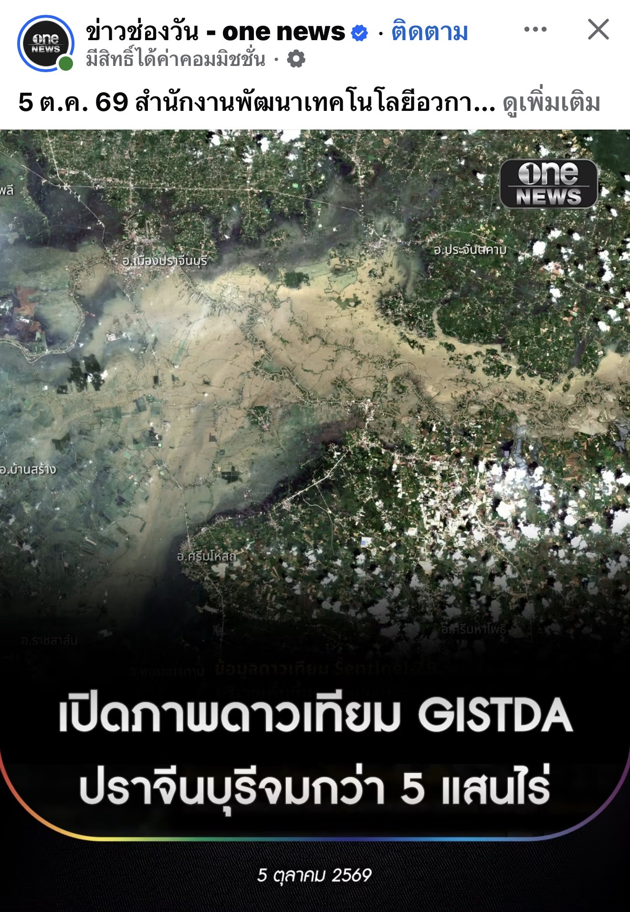

กำลังโหลด…
การตีความของ WIS ไม่ใช่ประกาศเตือนภัยของหน่วยงานรัฐ
ยังไม่ได้รับข้อมูล
อัปเดตทุก 60 วินาทีเมื่อเปิดหน้านี้
กำลังเชื่อมต่อ WIS…
ภาพดาวเทียมพื้นที่น้ำท่วม
ปราจีนบุรี · ภาพจาก Sentinel-2B
วันที่ถ่ายภาพ: 2 ต.ค. 2569 · เผยแพร่ข่าว: 5 ต.ค. 2569
ภาพอ้างอิงจากข่าวที่เจ้าของระบบส่งมา โดยข่าวต้นฉบับ GISTDA ระบุพื้นที่ได้รับผลกระทบกว่า 5 แสนไร่ ภาพนี้แสดงพื้นที่ปราจีนบุรี แยกจากสถานี C2/C13/C12 ในลุ่มเจ้าพระยา

สถานะ: ภาพอ้างอิงที่เผยแพร่แล้ว ยังไม่เชื่อมการอัปเดตภาพหรือชั้นพื้นที่น้ำท่วมอัตโนมัติ ภาพดาวเทียมมีวันถ่ายภาพเฉพาะ และไม่แสดงสถานการณ์น้ำแบบเรียลไทม์
ระดับน้ำย้อนหลัง
กำลังโหลดประวัติ…
อ่านข้อมูลอย่างไร
ระดับน้ำใช้หน่วยและฐานอ้างอิงจากแหล่งข้อมูลแต่ละสถานี ไม่ควรเปรียบเทียบตัวเลขระดับน้ำข้ามสถานีโดยตรง ระยะถึงตลิ่งเป็นค่าบวกเมื่อน้ำอยู่ต่ำกว่าตลิ่ง
“ไม่มีข้อมูล” หมายถึง API ส่งค่า NULL ไม่ใช่ศูนย์ การรีเฟรชหน้าไม่ได้ทำให้เวลาเก็บข้อมูลของสถานีใหม่ขึ้น ความเชื่อมั่นเป็นค่าจาก WIS ไม่ใช่ความน่าจะเป็นของน้ำท่วม
การนำเข้าล่าสุด: —